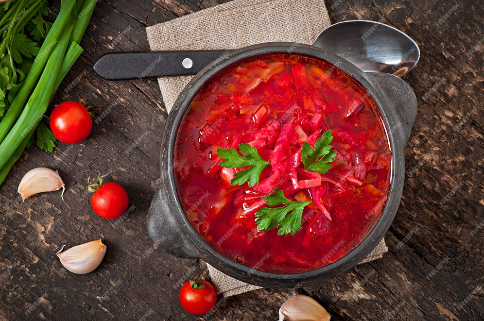
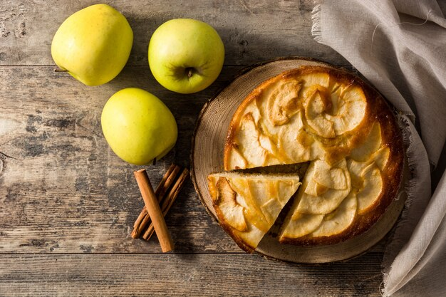

| Название блюда |
Оценка |
Рецепт |
Фото |
| Паста Карбонара |
9 |
- Спагетти варить 7-10 минут в кипящей подсоленной воде и откинуть на дуршлаг.
- В сковороде разогрейте оливковое масло, положите чеснок и слегка подрумяньте...
- Ветчину/бекон мелко нарежьте, добавьте к чесноку и обжаривайте 5 минут.
- Сыр пармезан натрите на мелкой терке. Желтки взбить со сливками, немного подсолить.
- Спагетти переложить в сотейник с чесноком и ветчиной/беконом.
- Добавить взбитые желтки и тёртый сыр, перемешать. Держать на огне 3 минуты.
- Посыпать молотым перцем, украсить зеленью и подавать на стол.
Подробнее...
|
 |
| Цезарь салат |
8 |
- Промыть, просушить и нарвать на небольшие кусочки листья салата, отложить в холодильник.
- В горячую сковородку положить 1 столовую ложку сливочного масла. После того, как оно полностью расплавится и начнет шипеть, кинуть нарезанный на пластины зубчик чеснока.
-
Куриную грудку нарезать на кусочки приблизительно 1х3 см. Положить в сковороду к чесноку и маслу. Обжаривать на сильном огне приблизительно 10 минут до румяной корочки. Снять с огня.
-
В ту же сковородку добавить еще одну столовую ложку сливочного масла и второй зубчик чеснока. В это время нарезать на небольшие кубики хлеб. Положить в сковороду и обжаривать до румяной корочки. Желательно непрерывно помешивать, чтобы не подгорело.
-
Достать листья салата, туда же положить обжаренную куриную грудку, помидоры, нарезанные тонкой соломкой. Заправить соусом «Цезарь». Перемешать. Сверху положить получившиеся сухарики и натереть сыр
Подробнее.. |
 |
| Шашлык |
10 |
- Развести мангал
- Пожарить шашлык
Подробнее... |
 |
| Борщ |
9 |
- Сварить борщ
Подробнее... |
 |
| Пирог яблочный |
8 |
- Испечь пирог
Рецепт |
> |
| Суши |
9 |
- Если пришли гости а у вас нечего есть, пошлите в погреб за прислугой -->
Рецепт |
 |